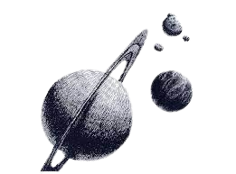

Definición de astronomía
¿Qué es la astronomía? Astronomía, cuya raíz viene del latín y el griego ‘astron’ (estrellas) y
‘nomia’ (normal o regla), es la rama de la ciencia que se encarga de estudiar las estrellas,
satélites, planetas… Y en definitiva todos los cuerpos que existen en el universo y la forma en
la
que se relacionan entre sí.

Con el apoyo de otras ciencias como la física, la astrofísica, la química, la biología,
geología
o climatología, la astronomía puede analizar todos los fenómenos que ocurren en el Universo
y
conocer de qué manera podrían estos afectar a nuestro planeta. Gracias al estudio de las
leyes
que rigen el movimiento de todos los cuerpos celestes conocemos interesantes conclusiones
del
universo que nos rodea, por ejemplo, que se encuentra en continua expansión.
Para alcanzar este conocimiento, la astronomía se basa principalmente en la información que
contiene la radiación electromagnética o de partículas que alcanza el observador. Por lo que
esta ciencia tampoco sería posible sin todos los instrumentos y herramientas que los
astrónomos
llevan siglos creando gracias a sus conocimientos para poder estudiar y observar los cuerpos
celestes. Entre ellos destaca el eran el Astrolabio, el Cuadrante o la Esfera armilar.
Para alcanzar este conocimiento, la astronomía se basa principalmente en la información que contiene la radiación electromagnética o de partículas que alcanza el observador. Por lo que esta ciencia tampoco sería posible sin todos los instrumentos y herramientas que los astrónomos llevan siglos creando gracias a sus conocimientos para poder estudiar y observar los cuerpos celestes. Entre ellos destaca el eran el Astrolabio, el Cuadrante o la Esfera armilar.
Historia de la astronomía
La historia de la astronomía es el relato de las observaciones, descubrimientos y
conocimientos
adquiridos a lo largo de la historia en materia astronómica.
CLa astronomía surge desde que la humanidad dejó de ser nómada y se empezó a convertir
en
sedentaria; luego de formar civilizaciones o comunidades empezó su interés por los
astros. Desde
tiempos inmemorables se ha visto interesado en los mismos. Estos han enseñado ciclos
constantes
e inmutabilidad durante el corto periodo de la vida del ser humano, lo que fue una
herramienta
útil para determinar los periodos de abundancia para la caza y la recolección o de
aquellos como
el invierno en que se requería de una preparación para sobrevivir a los cambios
climáticos
adversos.
La práctica de estas observaciones es tan cierta y universal que se han encontrado a lo
largo y
ancho del planeta en todas aquellas partes en donde han habitado los seres humanos. Se
deduce
entonces que la astronomía es probablemente uno de los oficios más antiguos,
manifestándose en
todas las culturas humanas.
La práctica de estas observaciones es tan cierta y universal que se han encontrado a lo largo y ancho del planeta en todas aquellas partes en donde han habitado los seres humanos. Se deduce entonces que la astronomía es probablemente uno de los oficios más antiguos, manifestándose en todas las culturas humanas.
Datos interesa sobre la astronomía
1.Próxima Centauri, a una distancia de 4.2 años de luz, es la estrella más cercana a nuestro
Sol.
2.La primera fotografía astronómica de la Luna fue capturada en 1840 por el profesor de
química William Draper.
3.La luz del Sol está compuesta de 50% de luz infrarroja, 40% de luz visible, y 10% de luz
ultravioleta.
4.La nebulosa Boomerang, en la constelación del Centauro, con una temperatura de 1 grado
Kelvin, es el lugar más frío conocido en el universo.
5.El Sol contiene el 99.6% de toda la masa de nuestro sistema solar.
6.En 1932, el físico Carl D. Roberts descubrió la primera antipartícula: el positrón.
7.Debido a su densa atmósfera, la superficie de Venus tiene una temperatura de
aproximadamente
462 °C, al menos 24 °C más caliente que Mercurio.
8.Tres cuartas partes de la materia normal en el universo es hidrógeno.
9.A diferencia de la Tierra que tiene cuatro estaciones, Venus no tiene estaciones, debido a
su leve inclinación.

10.Desde la Tierra, el Sol parece 30 veces más grande y 900 veces más brillante que desde
Neptuno.
11.Saturno es el único planeta del sistema solar con una densidad menor que la densidad del
agua.
12.En 1655, el astrónomo Christiaan Huygens descubrió que Saturno tiene múltiples anillos.
13.En 1803, el científico Jean Baptiste Biot estudió el meteorito L’Aigle y confirmó que la
roca provenía del espacio.
14.La nebulosa Saco de Carbón es una nebulosa oscura que puede observarse a simple vista en la
constelación de la Cruz del Sur.
15.En 2014, investigadores descubrieron por primera vez la presencia de placas tectónicas en un
lugar distinto a la Tierra, fue en Europa, una de las lunas de Júpiter.
16.A 153 años luz de distancia, las Hyades, en la constelación de Tauro, son el cúmulo de
estrellas más cercano a la Tierra y son visibles a simple vista desde un lugar alejado de la
contaminación lumínica.
17.Los términos “Trópico de Cáncer” y “Trópico de Capricornio” tienen su origen hace miles de
años cuando el Sol se localizaba en esas constelaciones durante el solsticio de verano e
invierno respectivamente.
18.Mientras tus ojos se adaptan a la oscuridad, su sensibilidad aumenta 10.000 veces en los
primeros treinta minutos. Después de ese tiempo la ganancia aumenta levemente.
19.En 1928, la Unión Astronómica Internacional formalizó los límites de las constelaciones, en
total son 88 regiones del cielo.
20.El 14 de enero de 2005, la sonda Huygens se convirtió en el primer objeto construido por el
ser humano en aterrizar en la luna de Saturno, Titán.
21.El registro más antiguo de un eclipse anular de Sol se realizó en Irlanda, el 30 de
noviembre del año 3340 a.C.
22.Utilizando datos del telescopio espacial Hubble, se estima que existen 125 billones de
galaxias en el universo visible.
¿Que sucede si un agujero negro se traga una estralla?

¿Cuál es el planeta más grande y pequeño del sistema solar?

¿Cuál es la teoría más aceptada sobre el origen del universo?

¿Cuál es la edad del universo?

¿Cuál es la distancia media entre la Tierra y el Sol?

¿Cómo se llama la Galaxia donde se encuentra el Sistema Solar?

¿Qué es un año galáctico?